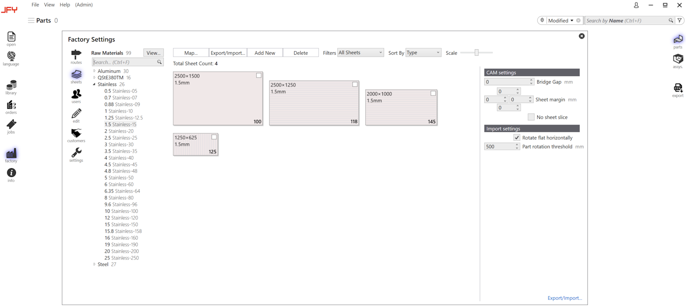
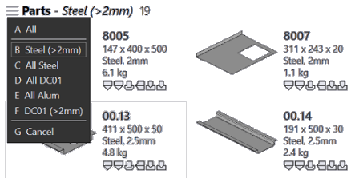

Workflow
Questo capitolo fornisce una panoramica di base delle fasi operative:
1. Configurare il sistema
Prima di iniziare è necessario configurare JFY Plus, che è la rappresentazione digitale della fabbrica. È necessario configurare le macchine, aggiungere il materiale, configurare l’attrezzaggio e configurare gli utenti.

2. Importare e modificare pezzi
Importare i pezzi nella Libreria pezzi. La tecnologia viene aggiunta istantaneamente ai pezzi, che possono essere verificati con le icone mostrate di seguito.
È possibile modificare tutti gli attrezzaggi facendo clic con il tasto destro sul pezzo.
Per combinare i pezzi in Ordini di produzione, li si selezionano nella libreria pezzi e si crea un job. Creare il job facendo clic con il tasto destro.
Se si dispone di più di una macchina, è possibile selezionare la macchina da usare per il job.
6. Usare i filtri per trovare i pezzi
Ci sono potenti algoritmi di filtraggio per trovare qualsiasi pezzo dai clienti.

7. Rilasciare il pezzo alle macchine
È possibile modificare il job in qualsiasi momento prima di rilasciarlo alla macchina. Per produrre i pezzi, occorre eseguire Assegna pezzo alle macchine. Quindi il programma NC viene trasferito alla macchina.
Dopo il rilascio della posizione predefinita della cartella O il rilascio della posizione Trasmettitore codice alla macchina, si procede alla produzione; contrassegno come completo.